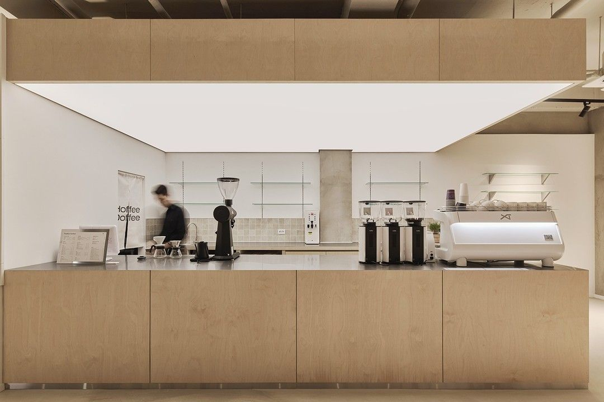

Café é incrível. Nós amamos. Mas sabor e aroma são apenas uma parte de toda a experiência. Sabíamos que algo estava faltando. Alguma coisa que combinasse com pureza que o café representa. Achamos, no outro lado do mundo. Japão. Simplicidade, minimalismo e a constante busca pela perfeição. Inspirados por tudo que vimos por lá, The Coffee foi criado. O melhor do café brasileiro combinado com a pureza e o perfeccionismo do Japão. Simple.